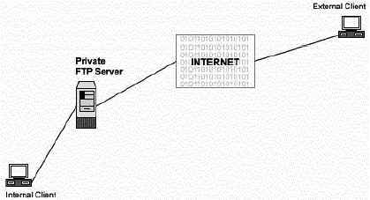
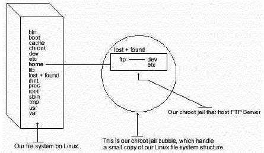

Глава 21 Серверное программное обеспечение (Файловый сервис) -
SambaВ этой главе
Linux Samba
сервер
Конфигурации
Создание файла
с шифрованными паролями для пользователей
Организация
защиты Samba
Оптимизация
Samba
Административные
средства Samba
Утилиты
пользователя Samba
Linux FTP
сервер
Настройка
бюджета пользователя FTP без shell-а
Настройка
окружения пользователя под chroot
Конфигурации
Настройка
ftpd для использования с TCP-Wrappers inetd супер сервером
Административные
средства FTP
Организация
защиты FTP
|
|
Краткий обзор.
Несмотря на прошедшие годы, использование File Transfer
Protocol (FTP) является одним из самых популярных способов пересылки файлов с
одной машины на другую через сеть. Клиенты и сервера написаны для каждой из
популярных платформ присутствующих на рынке, делая таким образом FTP наиболее
удобным способом пересылки файлов.
Существует много различных путей настройки вашего FTP сервера.
Один из них приватный, только для пользователей системы, который является
конфигурацией по умолчанию FTP сервера; приватный FTP сервер позволяет
пользователям Linux системы соединиться с сервером по протоколу FTP и получить
доступ к их файлам.
Другой тип ftp сервера - анонимный FTP. Такой сервер позволяет
кому угодно соединяться с сервером и передавать файлы без получения учетной
записи. Из за потенциального риска безопасности системы, должны быть приняты
меры, чтобы позволить доступ только к определенным каталогам системы.
Конфигурация, которую мы охватываем здесь, предоставляет FTP
полубезопасную область файловой системы (chroot гостевой FTP доступ). Она
позволит пользователю получить доступ к каталогу FTP сервера, при этом он не
сможет перейти на более высокий уровень. Это наиболее безопасная конфигурация
для FTP сервера.

Эти инструкции предполагают.
Unix-совместимые
команды.
Путь к исходным кодам "/var/tmp" (возможны другие
варианты).
Инсталляция была проверена на Red Hat Linux 6.1 и 6.2.
Все шаги
инсталляции осуществляются суперпользователем "root".
wu-ftpd версии
2.6.0
Пакеты.
Домашняя страница Wu-ftpd: http://www.wu-ftpd.org/
FTP
сервер Wu-ftpd: 205.133.13.68
Вы должны скачать:
wu-ftpd-2.6.0.tar.gz
Раскройте тарбол:
[root@deep /]#
cp wu-ftpd-version.tar.gz /var/tmp
[root@deep /]# cd /var/tmp
[root@deep
tmp]# tar xzpf wu-ftpd-version.tar.gz
Компиляция и оптмизация.
Перейдите в новый каталог Wu-ftpd и введите следующие команды
на вашем терминале:
Шаг 1
Редактируйте файл ftpcount.c (vi +241 src/ftpcount.c) и
измените строку:
#if defined
(LINUX)
на:
#if defined
(LINUX_BUT_NOT_REDHAT_6_0)
Шаг 2
Редактируйте файл pathnames.h.in (vi +42 src/pathnames.h.in) и
измените строку:
#define _PATH_EXECPATH
"/bin/ftp-exec"
на:
#define
_PATH_EXECPATH "/usr/bin/ftp-exec"
Мы изменили каталог "/bin/ftp-exec" на "/usr/bin/ftp-exec", для
Red Hat Linux.
Шаг 3
Введите следующие команды на вашем терминале для
конфигурирования Wu-ftpd:
CC="egcs"
\
CFLAGS="-O9 -funroll-loops -ffast-math -malign-double -mcpu=pentiumpro
-march=pentiumpro -fomit-frame-pointer -fno-exceptions" \
./configure
\
--prefix=/usr \
--sysconfdir=/etc \
--localstatedir=/var
\
--disable-dnsretry \
--enable-quota \
--enable-pam
\
--disable-daemon \
--disable-newlines \
--disable-virtual
\
--disable-plsm \
--disable-pasvip \
--disable-anonymous
\
--enable-ls \
--enable-numericuid
Эти опции означают следующее:
- Не повторять ошибочный DNS lookups для улучшения производительности.
- Добавить поддержку квот для большей безопасности (только если ваша OS
поддерживает это).
- Добавить поддержку PAM для большей безопасности.
- Не разрешать запускать, как автономный демон, позволять контролировать
FTPD при помощи TCP-Wrappers.
- Подавлять некоторые дополнительные пустые строки.
- Не поддерживать виртуальные сервера.
- Отключить блокирование PID ожидания сообщений (для загруженных серверов).
- Не требовать идентичного IP для пассивного соединения.
- Не разрешать анонимный ftp доступ для лучшей безопасности.
- Использовать новую внутреннюю команду "ls" из Wu-ftpd вместо системной
"ls" из Linux для большей безопасности.
- Внутренняя "ls" выводит UID вместо имен пользователей для лучшей
производительности.
Шаг 4
Сейчас, мы должны инсталлировать Wu-ftpd на Linux
сервер:
[root@deep wu-ftpd-2.6.0]#
make
[root@deep wu-ftpd-2.6.0]# make install
[root@deep wu-ftpd-2.6.0]#
install -m 755 util/xferstats /usr/sbin/
[root@deep wu-ftpd-2.6.0]# touch
/var/log/xferlog
[root@deep wu-ftpd-2.6.0]# chmod 600
/var/log/xferlog
[root@deep wu-ftpd-2.6.0]# cd /usr/sbin/
[root@deep
sbin]# ln -sf in.ftpd /usr/sbin/wu.ftpd
[root@deep sbin]# ln -sf in.ftpd
/usr/sbin/in.wuftpd
[root@deep sbin]# strip /usr/bin/ftpcount
[root@deep
sbin]# strip /usr/bin/ftpwho
[root@deep sbin]# strip
/usr/sbin/in.ftpd
[root@deep sbin]# strip /usr/sbin/ftpshut
[root@deep
sbin]# strip /usr/sbin/ckconfig
[root@deep sbin]# strip
/usr/sbin/ftprestart
Команды "make" и "make install" настроят программное
обеспечение под вашу систему и проверят ее функциональность на наличие
необходимых библиотек, скомпилируют все файлы с исходными кодами в исполняемые
двоичные программы и проинсталлируют их вместе с сопутствующими файлами в
необходимые места.
Команда "install -m" будет инсталлировать программу
"xferstats", используемую для просмотра информации о переданных файлах. Команда
"touch" создаст файл регистрации для "xferstats" в каталоге "/var/log". "chmod"
изменит права доступа к файлу "xferlog" на чтение-запись только пользователю
"root". Затем, мы создаем символическую ссылку для исполняемого файла "in.ftpd",
и, в заключении, удаляем отладочную информацию из всех исполняемых файлов,
относящихся к Wu-ftpd.
Очистка после работы.[root@deep /]# cd /var/tmp
[root@deep tmp]# rm -rf
wu-ftpd-version/ wu-ftpd-version.tar.gz
Команды "rm" будет удалять все файлы с исходными кодами,
которые мы использовали при компиляции и инсталляции Wu-ftpd. Также будет удален
сжатый архив Wu-ftpd из каталога "/var/tmp".
Чрезвычайно важно, чтобы ваши пользователи FTP не имели
реального командного процессора. В этом случае, если они по каким-либо причинам
смогут покинуть chroot окружение FTP, то не смогут выполнить никаких задач, так
как не имеют командного процессора.
Первое, создайте нового пользователя, которому вы планируете
разрешить подключаться к вашему FTP серверу. Это должна быть учетная запись
независимая от регулярно используемых, в связи с особенностями работы "chroot"
окружения. Chroot создаст пользователю ощущение, будто каталог в который его
поместили находится на самом верху файловой системы.
Шаг 1
Используйте следующие команды для создания пользователя в файле
"/etc/passwd". Этот шаг должен выполняться для каждого пользователя, кому нужен
доступ к FTP серверу.
[root@deep /]# mkdir
/home/ftp
[root@deep /]# useradd -d /home/ftp/ftpadmin/ -s /dev/null ftpadmin
> /dev/null 2>&1
[root@deep /]# passwd ftpadmin
Changing
password for user ftpadmin
New UNIX password:
Retype new UNIX
password:
passwd: all authentication tokens updated successfully
Команда "mkdir" создаст каталог "ftp" в "/home" для хранения
всех домашних каталогов FTP пользователей. Команда "useradd" добавит нового
пользователя с именем "ftpadmin" в вашей системе. В заключении, команда "passwd"
установит пароль для него. После того, как каталог "/home/ftp/" создан, вам не
нужно будет создавать его для каждого нового пользователя.
Шаг 2
Редактируйте файл "/etc/shells" (vi /etc/shells) и добавьте в
него несуществующий командный процессор, например "null". Этот ложный shell
ограничит доступ FTP пользователям к системе.
[root@deep /]# vi
/etc/shells
/bin/bash
/bin/sh
/bin/ash
/bin/bsh
/bin/tcsh
/bin/csh
/dev/null
(это ваш несуществующий командный процессор)
ЗАМЕЧАНИЕ. В Red Hat Linux, специальное имя устройства
(/dev/null) существует для подобных целей.
Шаг 3
Сейчас, редактируйте ваш файл "/etc/passwd" и вручную добавьте
подстроку "/./", разделяющую каталоги "/home/ftp" и "/ftpadmin", где "ftpadmin"
должен автоматически изменить каталог. Этот шаг должен быть выполнен для каждого
FTP пользователя, добавляемого в файл "passwd".
Редактируйте файл passwd (vi /etc/passwd) и добавьте/измените
строку для пользователя "ftpadmin":
ftpadmin:x:502:502::/home/ftp/ftpadmin/:/dev/nullна:
ftpadmin:x:502:502::/home/ftp/./ftpadmin/:/dev/null
^^
Обратите внимание, что путь к домашнему каталогу пользователя
"ftpadmin" немного нечеткий. Первая часть "/home/ftp/" показывает файловую
систему, которая должна стать новый корневым каталогом. Разделяющая точка "."
говорит, что из текущего каталога необходимо автоматически переходить в
"/ftpadmin/". Еще раз отметим, что часть "/dev/null" отключает вход в систему,
как регулярного пользователя. С этим изменением, пользователь "ftpadmin" имеет
ложный командный процессор вместо реального, тем самым имея ограничения в
доступе к системе.
Далее вы должны создать основу корневой файловой системы с
достаточным количеством необходимых компонентов (исполняемые файлы, файлы парлей
и т.д.), чтобы позволить Unix выполнить chroot, когда пользователь входит в
систему. Заметим, что если вы использовали опцию "--enable-ls" во время
компиляции, как мы предлагали выше, то каталоги "/home/ftp/bin" и
"/home/ftp/lib" не нужны, так как Wu-ftpd будет использовать собственную функцию
"ls". Мы остановимся на демонстрации старого метода, при котором люди копируют
"/bin/ls" в chroot FTP каталог ("/home/ftp/bin") и создают соответствующие
библиотеки, связанные с "ls".

Необходимо выполнить следующие шаги, чтобы запустить Wu-ftpd в
chroot окружении:
Шаг 1
Создадим все необходимые каталоги chroot окружения:
[root@deep /]# mkdir /home/ftp/dev
[root@deep /]# mkdir
/home/ftp/etc
[root@deep /]# mkdir /home/ftp/bin (требуется, если вы
не использовали опцию "--enable-ls")
[root@deep
/]# mkdir /home/ftp/lib (требуется, если вы не использовали опцию
"--enable-ls")
Шаг 2
Измените права доступа к новым каталогам на 0511 из соображений
безопасности:
[root@deep /]# chmod 0511
/home/ftp/dev/
[root@deep /]# chmod 0511 /home/ftp/etc/
[root@deep /]#
chmod 0511 /home/ftp/bin (требуется, если вы не использовали опцию
"--enable-ls")
[root@deep /]# chmod 0511
/home/ftp/lib (требуется, если вы не использовали опцию
"--enable-ls")
Команда "chmod" изменит права доступа к chroot каталогам "dev",
"etc", "bin" и "lib" на чтение и исполнения для "root" и исполнение для группы и
всех остальных пользователей.
Шаг 3
Копируйте исполняемый файл "/bin/ls" в каталог "/home/ftp/bin"
и изменим права доступа к нему на 0111. (Вы не хотите позволять пользователям
модифицировать этот файл):
[root@deep /]# cp
/bin/ls /home/ftp/bin (требуется, если вы не использовали опцию
"--enable-ls")
[root@deep /]# chmod 0111 /bin/ls
/home/ftp/bin/ls (требуется, если вы не использовали опцию
"--enable-ls")
ЗАМЕЧАНИЕ. Этот шаг необходим только если вы не
использовали при конфигурировании опцию "--enable-ls". Смотрите секцию
"Компиляция и оптимизация" в этой главе.
Шаг 4
Найдите разделяемые библиотеки от которых зависит программа
"ls":
[root@deep /]# ldd /bin/ls
(требуется, если вы не использовали опцию "--enable- ls")
libc.so.6 => /lib/libc.so.6 (0x00125000)
/lib/ld-linux.so.2 =>
/lib/ld-linux.so.2 (0x00110000)
Копируйте их в новый каталог "lib", расположенный в
"/home/ftp":
[root@deep /]# cp /lib/libc.so.6
/home/ftp/lib(требуется, если вы не использовали опцию
"--enable-ls")
[root@deep /]# cp
/lib/ld-linux.so.2 /home/ftp/lib/ (требуется, если вы не использовали
опцию "--enable-ls")
ЗАМЕЧНИЕ. Эти библиотеки нужны для работы команды "ls".
Также, как и шаг 3, это необходимо сделать, если вы во время конфигурирования
Wu-ftpd не указали опцию "--enable-ls" для использования внутренней команды
"ls".
Шаг 5
Создайте файл "/home/ftp/dev/null":
[root@deep /]# mknod /home/ftp/dev/null c 1 3
[root@deep /]# chmod
666 /home/ftp/dev/null
Шаг 6
Копируйте файлы "group" и "passwd" в каталог "/home/ftp/etc".
Они не должны быть такими же, как оригиналы. Мы удалим из них всех не FTP
пользователей, исключая "root".
[root@deep /]# cp
/etc/passwd /home/ftp/etc/
[root@deep /]# cp /etc/group
/home/ftp/etc/
Редактируйте файл passwd (vi /home/ftp/etc/passwd) и удалите из
него все элементы, кроме "root" и ваших FTP пользователей. Файл должен иметь
следующий вид:
root:x:0:0:root:/:/dev/null
ftpadmin:x:502:502::/ftpadmin/:/dev/null
ЗАМЕЧАНИЕ. Мы отметим здесь две вещи: первое, домашний
каталог всех пользователей был изменен (например, /home/ftp/./ftpadmin/ на
/ftpadmin/), и второе, командный процессор для пользователя "root" был изменен
на "/dev/null".
Редактируйте файл group (vi /home/ftp/etc/group) и удалите все
элементы, исключая "root" и всех FTP пользователей. Файл "group" должен
соответствовать вашему нормальному файлу групп:
root:x:0:root
ftpadmin:x:502:
Шаг 7
Сейчас, мы должны иммунизировать файлы "passwd" и "group",
находящиеся в chroot окружении.
Установим бит "постоянства" на файл "passwd":
[root@deep /]# cd /home/ftp/etc/
[root@deep /]# chattr
+i passwd
Установим бит "постоянства" на файл "group":
[root@deep /]# cd /home/ftp/etc/
[root@deep /]# chattr
+i group
Все программное обеспечение, описанное в книге, имеет
определенный каталог и подкаталог в архиве "floppy.tgz", включающей все
конфигурационные файлы для всех программ. Если вы скачаете этот файл, то вам не
нужно будет вручную воспроизводить файлы из книги, чтобы создать свои файлы
конфигурации. Скопируйте файлы связанные с Wu-ftpd из архива, измените их под
свои требования и поместите в нужное место так, как это описано ниже. Файл с
конфигурациями вы можете скачать с адреса: http://www.openna.com/books/floppy.tgz
Для запуска ftp сервера следующие файлы должны быть созданы или
скопированы на ваш сервер.
Копируйте файлы ftpaccess в каталог "/etc/".
Копируйте файлы
ftpusers в каталог "/etc/".
Копируйте файлы ftphosts в каталог
"/etc/".
Копируйте файлы ftpgroups в каталог "/etc/".
Копируйте файлы
ftpconversion в каталог "/etc/".
Копируйте ftpd в каталог
"/etc/logrotate.d/".
Копируйте ftp в каталог "/etc/pam.d/".
Вы можете взять эти файлы из нашего архива floppy.tgz.
Конфигурация файла "/etc/ftpaccess"
"/etc/ftpaccess" - это основной конфигурационный файл,
используемый для конфигурирования сервера Wu-ftpd. Этот файл первоначально
предназначен для определения какие пользователи, сколько пользователей, могут
получить доступ к вашему серверу, и прочих важных элементов настройки
безопасности сервера.
Шаг 1
Редактируйте файл ftpaccess (vi /etc/ftpaccess) и
добавьте/измените в нем следующие строки:
class openna guest 208.164.186.*
limit openna 20 MoTuWeTh,Fr0000-1800 /home/ftp/.too_many.msg
email [email protected]
loginfails 3
readme README* login
readme README* cwd=*
message /home/ftp/.welcome.msg login
message .message cwd=*
compress yes all
tar yes all
chmod yes guest
delete yes guest
overwrite yes guest
rename yes guest
log commands real,guest
log transfers real,guest inbound,outbound
guestgroup ftpadmin
guestgroup webmaster
# We don't want users being able to upload into these areas.
upload /home/ftp/* / no
upload /home/ftp/* /etc no
upload /home/ftp/* /dev no
# We'll prevent downloads with noretrieve.
noretrieve /home/ftp/etc
noretrieve /home/ftp/dev
log security real,guest
guest-root /home/ftp ftpadmin webmaster
restricted-uid ftpadmin webmaster
restricted-gid ftpadmin webmaster
greeting terse
keepalive yes
noretrieve .notar
Шаг 2
Сейчас мы должны изменить права доступа на 600:
[root@deep /]# chmod 600 /etc/ftpaccess
Эти параметры конфигурационного файла говорят следующее:
class openna guest 208.164.186.*
Опция "class"
определяет классы пользователей, которые имеют доступ к вашему FTP серверу. Вы
можете определить столько классов, сколько хотите. В нашем случае, например, мы
определяем класс с именем <openna>, и позволяем пользователю <guest>
с учетными записями на ftp сервере доступ к их домашним каталогам через FTP,
если они заходят с адреса 208.164.186.*. Важно заметить, что существует три
различных типа пользователей: anonymous, guest, и real. Пользователи Anonymous -
это любой пользователь сети, который подключается к серверу и пересылает файлы
не имея учетной записи на нем. Пользователь Guest - это реальный пользователь
системы для которых сессии настроены также, как и для анонимных пользователей
FTP (это то, что мы определили в нашем примере), и пользователь Real должен
иметь учетную запись и командный процессор (shell) (это может приводить к риску
для безопасности) на сервере для доступа к нему.
limit openna 20 MoTuWeTh,Fr0000-1800 /home/ftp/.too_many.msg
Опция "limit" определяет число пользователей данного класса, которым
разрешается подключаться к серверу, и разрешенное время суток. В нашем примере,
к FTP серверу из класса <openna> может подключаться максимум 20
пользователей, в понедельник, вторник, среда, четверг целый день, а в пятницу с
полуночи до 6:00 вечера <Fr0000-1800>. Также, если количество
пользователей достигло предела (20), то вновь подключаемым пользователям будет
выдаваться сообщение </home/ftp/.too_many.msg>. Это очень полезный
параметр для контроля за ресурсами сервера.
loginfails 3
Опция "loginfails" определяет число
ошибочных попыток подключений к серверу, которое может осуществить пользователь
до того, как будет отсоединен от сервера. В нашем примере мы отключаем
пользователя от FTP сервера после трех попыток.
readme README* login
readme README* cwd=*
Опция
"readme" определяет сообщение выдаваемое клиенту во время регистрации на
сервере, или во время использования команды смены каталога, которая определяет
файлы в текущем каталоге измененные в последнее время. В нашем примере, мы
устанавливаем имя файла <README*> относительно каталога FTP, и условия
вывода сообщения: при успешном входе в систему <login> или входе в новый
каталог <cwd=*>.
message /home/ftp/.welcome.msg login
message .message
cwd=*
Опция "message" определяет специальные сообщения, отображаемые
клиентам, когда они либо вошли в систему, либо используют команду смены рабочего
каталога. В нашем примере, мы показываем месторасположение и имя файлов
выводимых файлов </home/ftp/.welcome.msg или .message>, и условия при
которых они выводятся: при успешной регистрации в системе <login>, или
когда клиент входит в новый каталог <cwd=*>. Для опций "readme" и
"message", когда вы определяете путь для анонимных пользователей, вы должны
использовать абсолютный путь относительно анонимного FTP каталога.
compress yes all
tar yes all
chmod yes guest
delete
yes guest
overwrite yes guest
rename yes guest
Опции "compress",
"tar", "chmod", "delete", "overwrite" и "rename" определяют права, которые вы
хотите дать вашим пользователям на выполнение этих команд. В нашем примере, мы
даем права группе <guest> на команды chmod, delete, overwrite и rename, и
позволяем всем <all> использовать команды compress и tar. Если вы не
определите следующие директивы, они по умолчанию будут выставлены в "yes" для
всех.
log commands real,guest
Опция "log commands" включает
регистрацию команд пользователей из соображений безопасности. В нашем примере,
мы регистрируем все индивидуальные команды пользователей real и guest
<real,guest>. Результаты регистрации сохраняются в файле
"/var/log/message".
log transfers real,guest inbound,outbound
Опция "log
transfers" включает регистрацию всех FTP пересылок из соображения безопасности.
В нашем примере, мы регистрируем все пересылки пользователей real и guest
<real,guest>, inbound и outbound <inbound,outbound> определяют
направления пересылки, в нашем случае входящие и исходящие. Результаты
сохраняются в файле "/var/log/xferlog".
guestgroup ftpadmin
guestgroup webmaster
Опция
"guestgroup" определяет всех реальных пользователей относящихся к группе гостей,
сессии которых настроены также, как и в анонимном FTP <ftpadmin и
webmaster>. Файл "/home/ftp/etc/group" имеет входы для каждой из этих групп,
каждая из которых имеет только одного члена. Важно, что в конфигурационном файле
в одной строке должна быть записана одна гостевая группа.
log security real,guest
Опция "log security" включает
регистрацию нарушений правил безопасности для реальных, гостевых и/или анонимных
FTP клиентов. В нашем примере, мы разрешаем регистрацию нарушений для
пользователей использующих FTP сервер для доступа с реальных учетных записей и
гостевых бюджетов <real,guest>.
guest-root /home/ftp ftpadmin webmaster
restricted-uid
ftpadmin webmaster
restricted-gid ftpadmin webmaster
Эти опции,
"guest-root", "restricted-uid", "restricted-gid", определяют и контролируют
могут или нет пользователи guest получить доступ в области FTP сервера вне их
домашних каталогов (это важная функция повышения безопасности). В нашем примере,
мы определяем chroot() путь для пользователей <ftpadmin и webmaster> в
</home/ftp>, и они не могут получить доступа к другим файлам, потому что
ограничены своими домашними каталогами <restricted-uid ftpadmin
webmaster>, <restricted-gid ftpadmin webmaster>. Несколько диапазонов
UID может задаваться в этой строке. Если для пользователя выбран guest-root, то
домашний каталог пользователя из файла "<root-dir>/etc/passwd"
используется для определения начального каталога, и их домашний каталог в
масштабе всей системы из файла "/etc/passwd" не используется.
greeting terse
Опция "greeting" определяет, как много
системной информации будет выводится до того, как удаленный пользователь войдет
в систему. Здесь вы можете использовать три значения: <full> -
используется по умолчанию, показывает имя хоста и версию демона, <brief> -
только имя хоста, <terse> - просто сообщает "FTP server ready".
keepalive yes
Опция "keepalive" определяет должна ли
система сообщения keep alive на удаленный FTP сервер. Если установлена в "yes",
то сервер получит необходимое предупреждение о разрыве соединения или падении
удаленной машины.
Конфигурация файла "/etc/ftphosts"
Файл "/etc/ftphosts" используется для определения следующего:
может ли пользователь входить в систему с определенной машины или ему будет
запрещен доступ.
Шаг 1
Создайте файл ftphosts (touch /etc/ftphosts) и добавьте,
например, в него следующие строки:
# Пример файла host access
#
# Все, что после '#' это комментарии,
# пустые строки игнорируются
allow ftpadmin 208.164.186.1 208.164.186.2 208.164.186.4
deny ftpadmin 208.164.186.5
В нашем примере, мы разрешаем пользователю <ftpadmin>
соединяться с FTP сервером из явно заданного списка адресов <208.164.186.1
208.164.186.2 208.164.186.4>, и запрещаем пользователю <ftpadmin>
соединяться с сервера <208.164.186.5>.
Шаг 2
Измените права доступа на 600:
[root@deep /]# chmod 600 /etc/ftphosts
Конфигурация файла "/etc/ftpusers"
Файл "/etc/ftpusers" определяет пользователей, которым не
разрешен доступ на FTP сервер.
Шаг 1
Создайте файл ftpusers (touch /etc/ftpusers) и добавьте в него
следующих пользователей:
root
bin
daemon
adm
lp
sync
shutdown
halt
mail
news
uucp
operator
games
nobody
Шаг
2
Изменим права доступа к этому файлу на 600:
[root@deep /]# chmod 600 /etc/ftpusers
Конфигурация файла "/etc/ftpconversions"
Файл "/etc/ftpconversions" содержит инструкции, которые
разрешают вам по требованию сжимать файлы перед пересылкой.
Шаг 1
Редактируйте файл ftpconversions (vi /etc/ftpconversions) и
добавьте в него следующие строки:
:.Z : : :/bin/compress -d -c %s:T_REG|T_ASCII:O_UNCOMPRESS:UNCOMPRESS
: : :.Z:/bin/compress -c %s:T_REG:O_COMPRESS:COMPRESS
:.gz: : :/bin/gzip -cd %s:T_REG|T_ASCII:O_UNCOMPRESS:GUNZIP
: : :.gz:/bin/gzip -9 -c %s:T_REG:O_COMPRESS:GZIP
: : :.tar:/bin/tar -c -f - %s:T_REG|T_DIR:O_TAR:TAR
: : :.tar.Z:/bin/tar -c -Z -f -
%s:T_REG|T_DIR:O_COMPRESS|O_TAR:TAR+COMPRESS
: : :.tar.gz:/bin/tar -c -z -f -
%s:T_REG|T_DIR:O_COMPRESS|O_TAR:TAR+GZIP
: : :.crc:/bin/cksum %s:T_REG::CKSUM
: : :.md5:/bin/md5sum %s:T_REG::MD5SUM
Шаг 2
Измените права доступа на 600:
[root@deep /]# chmod 600 /etc/ftpconversions
Конфигурация файла "/etc/pam.d/ftp"
Сконфигурируйте ваш файл "/etc/pam.d/ftp" для использования pam
аутентификации.
Создайте файл ftp (touch /etc/pam.d/ftp) и добавьте в него
следующие строки:
#%PAM-1.0
auth required /lib/security/pam_listfile.so item=user sense=deny file=/etc/ftpusers onerr=succeed
auth required /lib/security/pam_pwdb.so shadow nullok
auth required /lib/security/pam_shells.so
account required /lib/security/pam_pwdb.so
session required /lib/security/pam_pwdb.so
Конфигурация файла "/etc/logrotate.d/ftpd"
Настройте ваш файл "/etc/logrotate.d/ftpd" на автоматическую
ротацию файлов регистраций каждую неделю.
Создайте файл ftpd (touch /etc/logrotate.d/ftpd) и добавьте в
него следующие строки:
/var/log/xferlog {
# ftpd должным образом не обрабатывает SIGHUP
nocompress
}
Tcp-wrappers должен быть включен на запуск и остановку ftpd
сервера. inetd читает настроечную информацию из своего конфигурационного файла
"/etc/inetd.conf". Для каждого поля этого файла должно обязательно
присутствовать его значение, поля разделяются пробелами или символами
табуляции.
Шаг 1
Редактируйте файл inetd.conf (vi /etc/inetd.conf) и добавьте
или проверьте на наличие следующие строки:
ftp stream tcp nowait root /usr/sbin/tcpd in.ftpd -l -a
Чтобы изменения вступили в силу, пошлите демону inetd сигнал
SIGHUP, используя следующую команду:
[root@deep
/]# killall -HUP inetd Шаг 2
Редактируйте файл hosts.allow (vi /etc/hosts.allow) и добавьте,
например, следующую строку:
in.ftpd: 192.168.1.4
win.openna.com
Которая говорит, что клиенту с IP адресом "192.168.1.4" и
именем хоста "win.openna.com" разрешен FTP доступ на сервер.
ftpwho
Программа ftpwho выводит всех активных пользователей ftp, и их
текущие процессы в системе. Выходные данные выдаются в формате напоминающем
команду "/bin/ps".
[root@deep /]# ftpwho
Service class openna:
5443 ? S 0:00 ftpd: win.openna.com: ftpadmin: IDLE
- 1 users ( 20 maximum)
Здесь вы видите, что к системе подключен один пользователь с
именем "ftpadmin" и пришедший с win.openna.com. Всего к серверу может
подключиться 20 пользователей.
ftpcount
Утилита ftpcount - это упрощенная версия ftpwho. Она показывает
только количество пользователей подключенных к системе в данный момент и общее
количество, которое может подключиться:
[root@deep /]# ftpcount
Service class openna - 1 users ( 20
maximum)
Файл ftpusers
Важно удостовериться, что вы настроили файл "/etc/ftpusers". В
нем определяются пользователи, которым не разрешено соединяться с вашим FTP
сервером. В него должны быть включены, как минимум, следующие пользователи:
root, bin, daemon, adm, lp, sync, shutdown, halt, mail, news, uucp, operator,
games, nobody и ВСЕ другие определенные по умолчанию пользователи, доступные в
вашем файле "/etc/passwd".
Анонимный FTP
Для отключения анонимного FTP, удалите пользователя "ftp" из
вашего файла паролей и проверьте, что пакет anonftp-version.i386.rpm не
инсталлирован. Для удаления пользователя "ftp" выполните следующую
команду:
[root@deep /]# userdel ftp
Для проверки, что RPM пакет анонимного FTP не инсталлирован у
вас на системе выполните следующую команду:
[root@deep /]# rpm -q anonftp
package anonftp is not
installed
Команда upload
По умолчанию, Wu-ftpd сервер разрешает upload всем
пользователям. Параметр upload позволяет удаленным пользователям загружать и
размещать файлы на FTP сервере. Для оптимальной безопасности, мы не хотим
разрешать пользователям загружать файлы в подкаталоги "bin", "etc", "dev" и
"lib" каталога "/home/ftp". В нашем файле "/etc/ftpaccess" мы уже сменили
корневой каталог (chroot) пользователей на "/home/ftp", и поэтому они не имеют
доступ к другим областям файловой системы.
Редактируйте файл ftpaccess (vi /etc/ftpaccess) и добавьте
следующие строки, которые запретят upload в определенные области.
# Мы не хотим, чтобы пользователи могли закачивать файлы в эти области.
upload /home/ftp/* / no
upload /home/ftp/* /etc no
upload /home/ftp/* /dev no
upload /home/ftp/* /bin no (требуется только если вы не использовали опцию "--
enable-ls")
upload /home/ftp/* /lib no (требуется только если вы не использовали опцию "--
enable-ls")
Вышеприведенные строки запрещают upload в подкаталоги "/",
"/etc", "/dev", "/bin" и "/lib" chroot каталога "/home/ftp".
Специальный
файл ".notar"
Хотите ли вы разрешать таррить каталоги или нет, вы должны
сделать так, чтобы нельзя было выполнить команду tar в областях, где запрещен
upload.
Шаг 1
Чтобы сделать это, создайте специальный файл '.notar' в каждом
каталоге и каталоге FTP.
[root@deep /]# touch
/home/ftp/.notar
[root@deep /]# touch /home/ftp/etc/.notar
[root@deep /]#
touch /home/ftp/dev/.notar
[root@deep /]# touch /home/ftp/bin/.notar
(требуется только если вы не использовали опцию "--enable-ls")
[root@deep /]# touch /home/ftp/lib/.notar
(требуется только если вы не использовали опцию "--enable-ls")
[root@deep /]# chmod 0 /home/ftp/.notar
[root@deep /]#
chmod 0 /home/ftp/etc/.notar
[root@deep /]# chmod 0
/home/ftp/dev/.notar
[root@deep /]# chmod 0 /home/ftp/bin/.notar
(требуется только если вы не использовали опцию "--enable-ls")
[root@deep /]# chmod 0 /home/ftp/lib/.notar
(требуется только если вы не использовали опцию "--enable-ls")
Шаг
2
Файл нулевой длины ".notar" может привести в замешательство
некоторые веб клиенты и FTP прокси, чтобы решить эту проблему, надо запретить
пересылку этого файла.
Редактируйте файл ftpaccess (vi /etc/ftpaccess) и добавьте
следующую строку, чтобы маркировать файл ".notar" как непересылаемый.
noretrieve .notarКоманда noretrieve.
Параметр noretrieve сервера Wu-ftpd позволяет вам запретить
пересылку выбранных каталогов или файлов. Хорошей идеей будет предотвращение
передачи некоторых подкаталогов (bin, etc, dev, and lib) из каталога "/home/ftp"
при помощи команды "noretrieve" в файле "/etc/ftpaccess" file. Редактируйте файл
ftpaccess (vi /etc/ftpaccess) и добавьте следующие строки для предотвращения
передачи ряда каталогов.
# Мы предотвращаем перекачку при помощи noretrieve.
noretrieve /home/ftp/etc
noretrieve /home/ftp/dev
noretrieve /home/ftp/bin (требуется только если вы не использовали опцию "--
enable-ls")
noretrieve /home/ftp/lib (требуется только если вы не использовали опцию "--
enable-ls")
Инсталлированные файлы
> /etc/pam.d/ftp
> /etc/logrotate.d/ftpd
> /etc/ftpaccess
> /etc/ftpconversions
> /etc/ftpgroups
> /etc/ftphosts
> /etc/ftpusers
> /home/ftp/
> /usr/man/man5/ftpconversions.5
> /usr/man/man5/xferlog.5
> /usr/man/man8/ftpd.8
> /usr/man/man8/ftpshut.8
> /usr/man/man8/ftprestart.8
> /usr/sbin/in.ftpd
> /usr/sbin/ftpshut
> /usr/sbin/ckconfig
> /usr/bin/ftpcount
> /usr/bin/ftpwho
> /usr/man/man1/ftpcount.1
> /usr/man/man1/ftpwho.1
> /usr/man/man5/ftpaccess.5
> /usr/man/man5/ftphosts.5
> /usr/sbin/ftprestart
> /usr/sbin/xferstats
> /usr/sbin/wu.ftpd
> /usr/sbin/in.wuftpd
> /var/log/xferlog